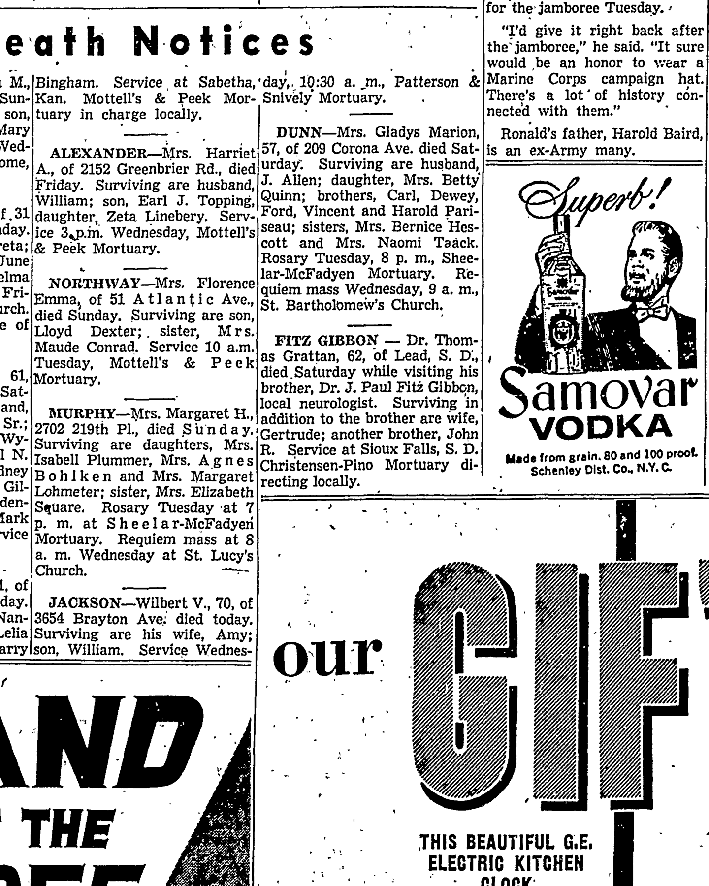

Paul Fitz Gibbon
Great-grandfather of Genevieve Elisa Symanski Nelson, wife of Peter.
Paul Fitz Gibbon was the son of Fitz Gibbon and Jimmy, Paul Fitz Gibbon's mother2.
Paul Fitz Gibbon was a quarterback for the Green Bay Packers, among other teams, from 1930-2; he was also a neurosurgeon, and Henry Kaiser's personal doctor.
Family
- Parents
- Fitz Gibbon and Jimmy, Paul Fitz Gibbon's mother tradition
- Partner
- Elaine de la Balt d. 1983
- Children
- John Grattan Fitz Gibbon Sr. b. 1934 tradition
- Paul Fitz Gibbon Jr. d. 1972 tradition
- Honorah Fitz Gibbon tradition
Life events
| Event | Date | Place and details |
|---|---|---|
| Work | 29 Jun 1957 | Los Angeles, California, United States Practicing neurologist in Long Beach, Los Angeles County, California ('Dr. J. Paul Fitz Gibbon, local neurologist'), when his brother Dr. Thomas Grattan Fitz Gibbon, age 62, of Lead, South Dakota, died Saturday, 29 June 1957 in Long Beach while visiting him (survived by wife Gertrude and brothers…1 |
Records

Sources
- Obituary: Fitz Gibbon — Dr. Thomas Grattan, Press-Telegram (Long Beach, California), 1 July 1957, p. 16.
FITZ GIBBON — Dr. Thomas Grattan, 62, of Lead, S. D., died.Saturday while visiting his brother, Dr. J. Paul Fitz Gibbon, local neurologist. Surviving in addition to the brother are wife, Gertrude; another brother, John R. Service at Sioux Falls, S. D. Christensen-Pino Mortuary directing locally.
Practicing neurologist in Long Beach, Los Angeles County, California ('Dr. J. Paul Fitz Gibbon, local neurologist'), when his brother Dr. Thomas Grattan Fitz Gibbon, age 62, of Lead, South Dakota, died Saturday, 29 June 1957 in Long Beach while visiting him (survived by wife Gertrude and brothers Dr. J. Paul Fitz Gibbon and John R. Fitz Gibbon, with funeral service at Sioux Falls, South Dakota).
- Peter's tree, danenberg.sql, 2007–2015, parentages 83.